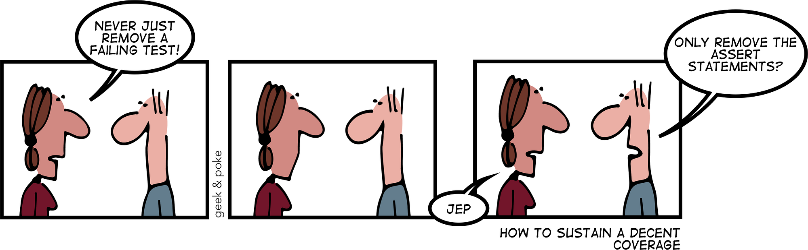
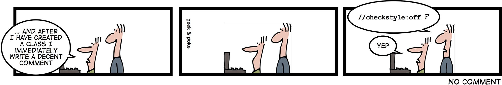

Really important parts of code reviews are almost impossible to automate: Architectural decisions and logical bugs. They are too customized to your codebase; too specific for the pull request.
However, many comments in code reviews are not like that. They are about simple style decisions, common minor mistakes, and misconceptions. They are valuable as well, but they distract the reviewer from the harder parts. The linting system Flake8 allows you to write plugins that automatically capture those simple things. You can execute them in your CI pipeline and thus never need to think about them again.
In this article, you will learn how to create a Flake8 plugin. As an example, we will create a plugin which recognizes the pattern
# Bad
not (a == b)
and thus can suggest using the following instead:
# Good
a != b
{kind=link}

About Flake8
Flake8 is a linter which only checks rules. It does not change the code. Every rule has a message and a code. The built-in rule codes begin either with E (Error) or with W (Warning). After that, a 3-digit number follows:
- E101: indentation contains mixed spaces and tabs
- E111: indentation is not a multiple of four
- E112: expected an indented block
One can select the rules which one wants to check on a prefix basis:
# Check all rules beginning with "E1" and nothing else
flake8 --select E1 .
Alternatively, one can blacklist rules:
# Check all rules except the ones beginning with E1 or W512
flake8 --ignore E1,W512 .
Plugins need a 3-character prefix. For my plugin flake8-simplify, I chose SIM as a prefix.
The 3-character prefix should not start with E or W as people might want to completely block Flake8 W-rules.
{kind=link}

The Flake8 Plugin Skeleton
Cookiecutter is a command-line utility that allows you to create a project from scratch by using a template. Install it via:
pip install cookiecutter
To create your Flake8 plugin template, use:
cookiecutter https://github.com/MartinThoma/cookiecutter-flake8-plugin
The Flake8 Plugin class
You need to create a plugin class like this:
import sys
if sys.version_info < (3, 8): # pragma: no cover (<PY38)
# Third party
import importlib_metadata
else: # pragma: no cover (PY38+)
# Core Library
import importlib.metadata as importlib_metadata
class Plugin:
name = __name__
version = importlib_metadata.version(__name__)
def __init__(self, tree: ast.AST):
self._tree = tree
def run(self) -> Generator[Tuple[int, int, str, Type[Any]], None, None]:
visitor = Visitor()
visitor.visit(self._tree)
for line, col, msg in visitor.errors:
yield line, col, msg, type(self)
You need to point to that class in the setup.cfg:
[options.entry_points]
flake8.extension =
AWE=flake8_awesome:Plugin
Just replace AWE with the 3-character code you want to have for your rules. We are, of course, not there yet. The visitor class still needs to be implemented. But to understand the visitor, we need to understand Python's AST.
Understanding Python's AST
An Abstract Syntax Tree (AST) is another representation of the code.
Install astpretty to understand what the AST looks like for a piece of code you’re interested in:
pip install astpretty
Here is how you use it:
$ astpretty --no-show-offsets /dev/stdin <<< "not a == b"
Module(
body=[
Expr(
value=UnaryOp(
op=Not(),
operand=Compare(
left=Name(id='a', ctx=Load()),
ops=[Eq()],
comparators=[Name(id='b', ctx=Load())],
),
),
),
],
type_ignores=[],
)
Next, we need to recognize that pattern.
A Flake8 visitor class
The logic of the linter is in the visitor class. The visitor gets called for every node in the AST. It has various methods which are based on the operations you see within astpretty, e.g. visit_UnaryOp. This method receives an ast.UnaryOp with which you can do whatever you want. More often than not, this will not be of the pattern you need. In this example, you need to look for op == Not(), operand == Compare, and ops == [Eq()].
This is how it’s done:
import ast
from typing import Any, DefaultDict, Generator, List, Tuple, Type
class Visitor(ast.NodeVisitor):
def __init__(self) -> None:
self.errors: List[Tuple[int, int, str]] = []
def visit_UnaryOp(self, node: ast.UnaryOp) -> None:
self.errors += _get_not_equal_calls(node)
self.generic_visit(node)
def _get_not_equal_calls(node: ast.UnaryOp) -> List[Tuple[int, int, str]]:
"""Get a list of all calls where a unary 'not' is used for an equality."""
errors: List[Tuple[int, int, str]] = []
if not isinstance(node.op, ast.Not) or not isinstance(node.operand, ast.Compare):
return errors
if len(node.operand.ops) != 1 or not isinstance(node.operand.ops[0], ast.Eq):
return errors
comparison = node.operand
left = astor.to_source(comparison.left).strip()
right = astor.to_source(comparison.comparators[0]).strip()
errors.append((node.lineno, node.col_offset, SIM201.format(left=left, right=right)))
return errors
I like astor's to_source to get a string back from the AST node, just like it was in the source code.
Testing Flake8 plugins
A big shoutout to Anthony Sottile. Before his video (linked below), I had no clue how to test Flake8 plugins. Thank you ❤️
It’s trivial once you know it: You create a string that contains a line or multiple lines of code. You pass it to ast.parse to get the abstract syntax tree. That one can be passed to your plugin, which should generate some output. That output can then be checked:
# Core Library
import ast
from typing import Set
# First party
from flake8_simplify import Plugin
def _results(code: str) -> Set[str]:
"""Apply the plugin to the given code."""
tree = ast.parse(code)
plugin = Plugin(tree)
return {f"{line}:{col} {msg}" for line, col, msg, _ in plugin.run()}
def test_trivial_case():
"""Check the plugin's output for no code."""
assert _results("") == set()
A non-trivial test looks like this:
def test_unary_not_equality():
ret = _results("not a == b")
assert ret == {("1:0 SIM201 Used 'not a == b' instead of 'a != b'")}
Complete example
This is part of flake8-simplify 0.2.0. I’ve pinned the version so that you can see the code in the simple form it has right now.
Please make me proud and automate your reviews — make the following comic true for Flake8 plugins as well :-)
{kind=link}
See also
I can highly recommend the following video by Anthony Sottile (LinkedIn, GitHub). He is the awesome guy who develops pyupgrade, blacken-docs, and astpretty: